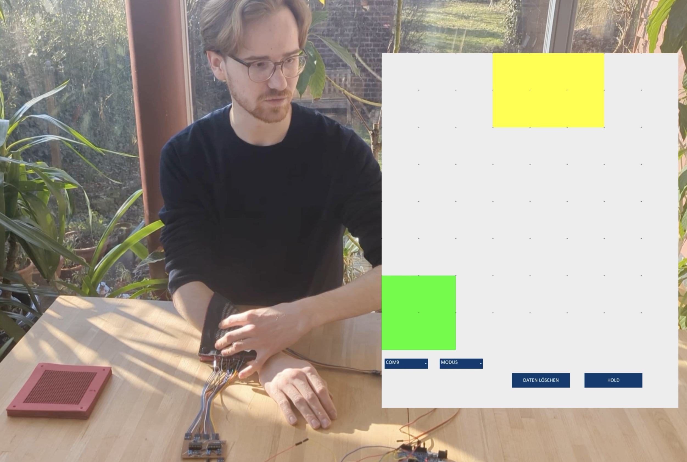

09/2024 – 03/2025 Product Engineering II Course at TH Köln · 09/2026–present Project Echo at TU Delft
Robotic skin development
From a conductive-thread tactile prototype to developing scalable skin concepts for a humanoid robot.
01 / The question
How can a robot know where it is being touched?
For a BSc project at TH Köln, Fabio and I explored a textile-based tactile skin that could localise touch across a surface. The prototype used conductive thread, layered materials and custom electronics to create a flexible surface that could detect where it was touched.
02 / Sensor structure
Building the sensing surface in layers.
The sensor was built as a layered structure. Conductive sender and receiver layers were separated by a laser-cut foam-rubber mesh, while an outer layer formed the touch surface. This approach allowed the sensing elements to remain flexible instead of relying on a rigid sensor board.

03 / Making the sensor
Turning conductive thread into a functional prototype.
Conductive threads were woven into robust fabric to create the electrical sensing layers and developed the surrounding measurement electronics. Shift registers and simple measurement circuits were then used to address the sensor and read the touch locations.

04 / Testing touch localisation
From material sample to interactive sensor.
The completed prototype was tested through repeated hands-on touch localisation. The sensing electronics translated interactions with the fabric into detected positions, which could then be visualised on the accompanying display.

05 / From prototype to Project Echo
Scaling the idea toward humanoid skin.
Since September 2026, I have been building on this experience as Skin Team Lead for RSA Project Echo at TU Delft. The new challenge is broader than the original prototype: we are investigating concepts that can scale across a humanoid body while combining touch localisation, approximate force sensing and a protective soft outer layer.

Current direction
The BSc prototype localised touch on a flexible conductive-fabric surface. In Project Echo, the focus is now on scaling tactile sensing and protective soft skin across a humanoid body, with the wider project aiming toward RoboCup Rescue 2028.